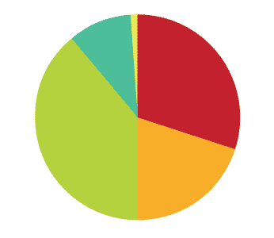

YMBA is a storytelling project in which we collected stories from strangers on the streets of Tel Aviv.
Concept - To get people of the city involved in a mutual experience of sharing and closeness. This came as an idea because of the growing sense of alienation we felt in Tel Aviv. In Israel, it's very common to know you neighbors, get together with them, and maintain close relationships. Tel Aviv is a unique city because of its population; many young residents are overly concerned with appearances and trying to be cool. So we offered a free shot of vodka in return for a story. In this way we gathered many different, weird, and funny stories that were published on a website to which people could upload their stories from home as well.
Process - The project lasted a whole semester so we had time to really develop our stand where people told their stories. At first, we used a small table and some stickers, but the structure developed into a fully functional stand with lights, a special storyteller chair, branded cups, graffiti boxes, and much more. Out on the street, we stole electricity from Tel Aviv's sockets and hung televisions on trees so people would be able to see from far away how their stories look when they are broadcast on the site. Finally, we created a recording stand for people to comment on the story in real time so that the storyteller could watch later on the responses to his or her story.
Website - On the site, we edited the good stories. People could comment on movies and send us their own movies from home. We also filmed a low-budget viral video that we distributed on the web. YMBA is a fun expression people say when they are happy or when they eat something delicious; it is also the initials of our names Yiftah, Moran, Boaz and Avi.
Project finished on June, 2009

{kind=link}